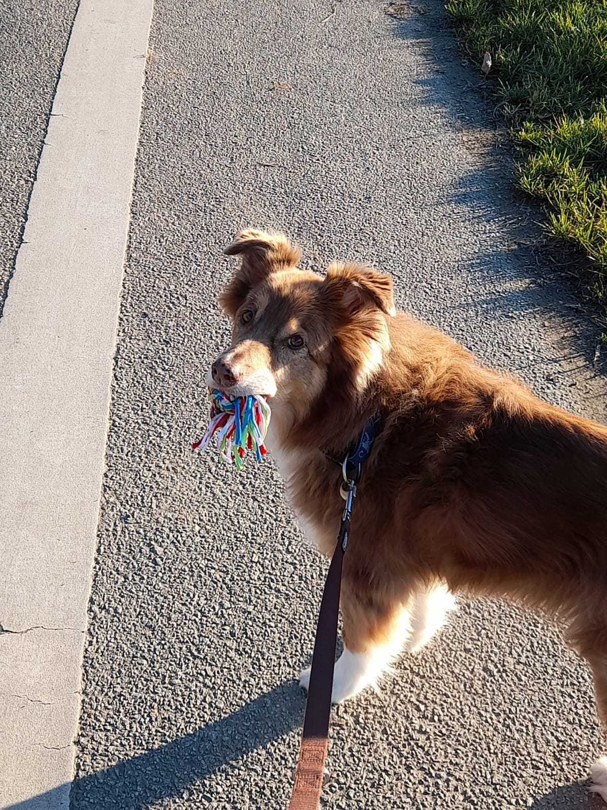

Willkommen bei DOG MAN
Sie haben Probleme mit ihrem vierbeinigen besten Freund? Er will partou nicht auf Sie
hören oder zerreist heimlich die Kissen ihres Sofas sind sie einmal nicht zuhause?

Dann bin ich der
richtige Mann, der ihnen weiterhelfen kann!
Wer ich bin?
DOG MAN
Aber Sie können mich auch
einfach "John" nennen.
Ich bin langähriger Hundetrainer aus Leidenschaft und habe sehr viel Erfahrung.
Ich zähle zu den absolute Koryphäen auf diesen Gebiet.
Also zögern Sie nicht und buchen Sie noch heute einen Termin!